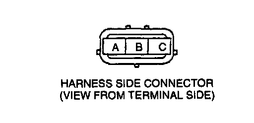

EGR Boost Sensor
NOTE:- Perform the following test only when detected.
1. Inspect the EGR boost sensor for damage and cracks.
2. Vacuum hose improper routing, kinks or leaks.
3. If correct the above inspect, inspect as follows:
Open circuit
- EGR boost circuit (EGR boost sensor connector terminal B and PCM connector terminal 3S.)
- Reference voltage circuit (EGR boost sensor connector terminal C and PCM connector terminal 21.)

- Ground circuit (EGR boost sensor connector terminal A and PCM connector terminal 3F through common connector.)
Short circuit
- EGR boost sensor connector terminal C and PCM connector terminal 21 through common connector to ground.
- EGR boost sensor connector terminal B and PCM connector 3S through common connector to ground.
4. Reconnect the EGR boost sensor connector.
5. If correct the above open or short circuit, replace EGR boost sensor.